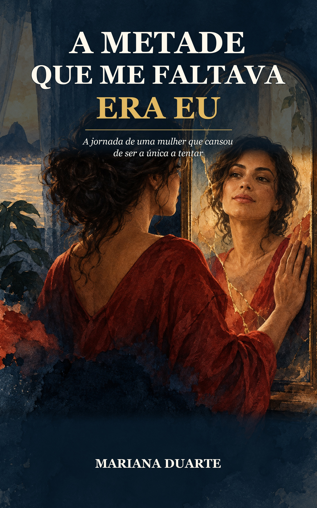
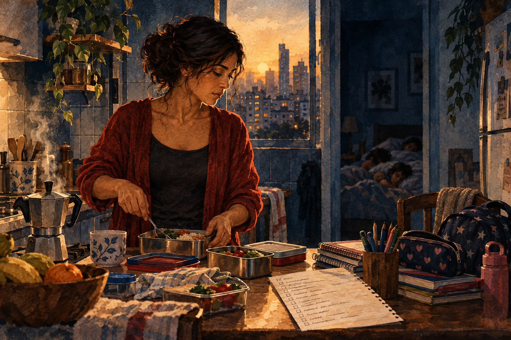

Você lembra de tudo
Contas, escola, consultas, compras, aniversários — e ainda ouve que precisa apenas pedir ajuda.
Um romance de Mariana Duarte
A Metade Que Me Faltava Era Eu é a história de uma mulher que cansou de ser a única a tentar — e encontrou coragem para voltar a existir na própria vida.

Talvez esta história fale com você
Não precisa haver uma grande traição para uma mulher desaparecer aos poucos. Às vezes, o que machuca é a soma de todos os dias.
Contas, escola, consultas, compras, aniversários — e ainda ouve que precisa apenas pedir ajuda.
As necessidades de todos têm lugar. As suas sempre ficam para depois.
Como se querer descanso, parceria e respeito fosse pedir demais.
A história
Onze anos de casamento, dois filhos e uma lista mental que nunca terminava. Camila trabalhava, cuidava da casa e mantinha a vida de todos funcionando. Ricardo dizia que ajudava. Na prática, esperava que ela pensasse, pedisse e agradecesse.
O fim não veio com uma cena de novela. Veio numa manhã comum, quando Camila estava com febre e percebeu que até doente continuava sozinha. Então disse as palavras que ensaiava havia meses: eu quero me separar.
Depois vieram o medo, as contas apertadas, a culpa pelos filhos e os julgamentos da família. Vieram também a terapia, novas amizades e uma caixa de aquarela que ela não abria havia anos.
Camila não saiu de um casamento para encontrar outro homem. Saiu para encontrar a mulher que tinha deixado para trás.
Você pode se reconhecer aqui
Não são lições de autoajuda. São dores, dúvidas e recomeços vividos por Camila dentro de uma história leve, íntima e cheia de esperança.
Em uma frase: este é um romance sobre uma mulher que deixa de carregar todos sozinha, reconstrói a própria vida e descobre que estar inteira vale mais do que ter alguém ao lado.
O peso invisível de lembrar, prever e organizar tudo para todos.
Quando uma pessoa “ajuda”, mas a mulher continua responsável por pensar e cobrar.
A dor de dividir a casa com alguém e, mesmo assim, enfrentar a vida sozinha.
Quem é Camila além de mãe, esposa, profissional e cuidadora de todo mundo?
O medo de machucar os filhos e a descoberta de que uma boa mãe também precisa viver.
Família, comentários e o receio de ser vista como a mulher que desistiu.
Contas apertadas, escolhas reais e a segurança de aprender a cuidar do próprio dinheiro.
Dizer “não” sem culpa e parar de aceitar migalhas para evitar conflitos.
Pedir ajuda, dar nome à dor e reconhecer padrões que antes pareciam normais.
Mulheres que escutam sem julgar e formam uma rede de apoio nos dias difíceis.
O medo da solidão e a diferença entre escolher alguém e precisar de alguém.
Guarda, presença, conversas difíceis e novas formas de continuar sendo família.
Uma mulher não precisa casar, ter mais filhos ou permanecer num relacionamento para provar que sua vida deu certo.
Uma transformação que você sente
As imagens acompanham as viradas de Camila e abrem espaço para a leitora respirar entre os momentos mais intensos.

A lista mental, o cansaço e a solidão de fazer tudo sem parceria.
Um pincel, cinco folhas e a descoberta de que ela ainda existia ali.
O final não apaga as cicatrizes. Mostra o que ela criou com elas.
Um trecho do livro
A metade que me faltava não era um homem. Não era um status. Não era aprovação. A metade que me faltava… era eu.”Capítulo 40 — A Metade Que Me Faltava Era Eu Ler desde o começo
Perguntas frequentes
É a história de Camila, uma mulher que carrega sozinha a casa, os filhos e a organização da família. Ao decidir se separar, ela precisa reconstruir a vida financeira, a maternidade e a relação consigo mesma.
É ficção: um romance contemporâneo completo, com 40 capítulos. Por meio da vida de Camila, a história aborda treze temas femininos ligados à sobrecarga, à maternidade, ao divórcio, à autonomia e ao recomeço.
São treze temas centrais: carga mental, trabalho doméstico desigual, solidão no casamento, perda da identidade, culpa materna, divórcio, independência financeira, amor-próprio, terapia, amizade feminina, dependência emocional, reconstrução familiar e autonomia para escolher o próprio futuro.
Não. O livro também conversa com quem já se sentiu invisível, sobrecarregada ou distante da pessoa que era antes de cuidar de todo mundo.
É o trabalho de lembrar, prever e organizar tudo: contas, compras, horários, escola, consultas e necessidades da família. Mesmo quando outra pessoa executa uma tarefa, muitas mulheres continuam responsáveis por pensar nela.
Sim. Camila termina solteira, em paz e feliz com a própria companhia. O final feliz deste livro é ela voltar a se reconhecer inteira.
A leitura online está disponível gratuitamente neste site. As edições para Amazon ainda não foram publicadas.
Comece agora a história de Camila. A leitura online está gratuita e não exige cadastro.
Começar o capítulo 1